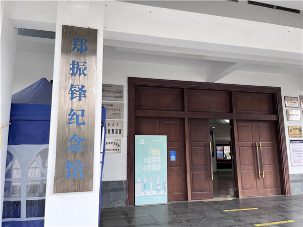
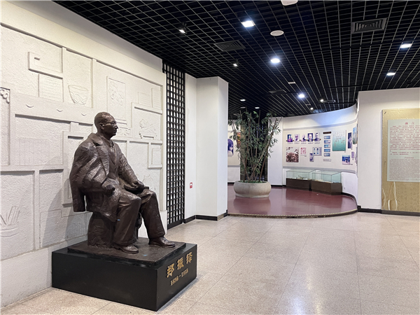
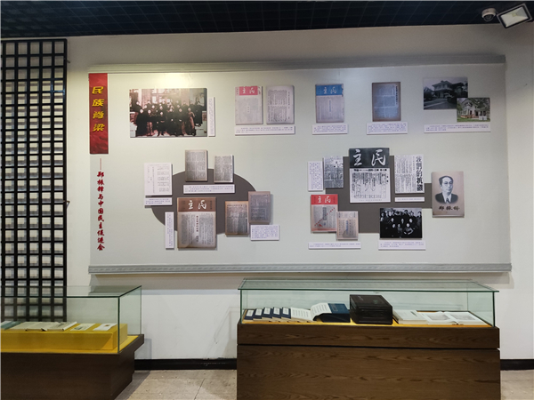

郑振铎纪念馆（福建长乐）

郑振铎纪念馆（福建长乐）展厅

郑振铎纪念馆（福建长乐）展陈一角
长乐郑振铎纪念馆隶属长乐区博物馆展馆，位于长乐区爱心路198号区博物馆内，展厅面积约为448平方米，2004年12月正式对外开放。郑振铎纪念馆以大量的历史资料、照片，详尽介绍了郑振铎灿烂的一生。该馆展出了郑振铎与知交瞿秋白、李大钊、茅盾、叶圣陶、胡愈之等人交往的大量照片，同时收集并展示了郑振铎生前物品及大量介绍、研究郑振铎的书刊，展示了郑振铎参与创建民进和为中国民主政治建设作出的杰出贡献。